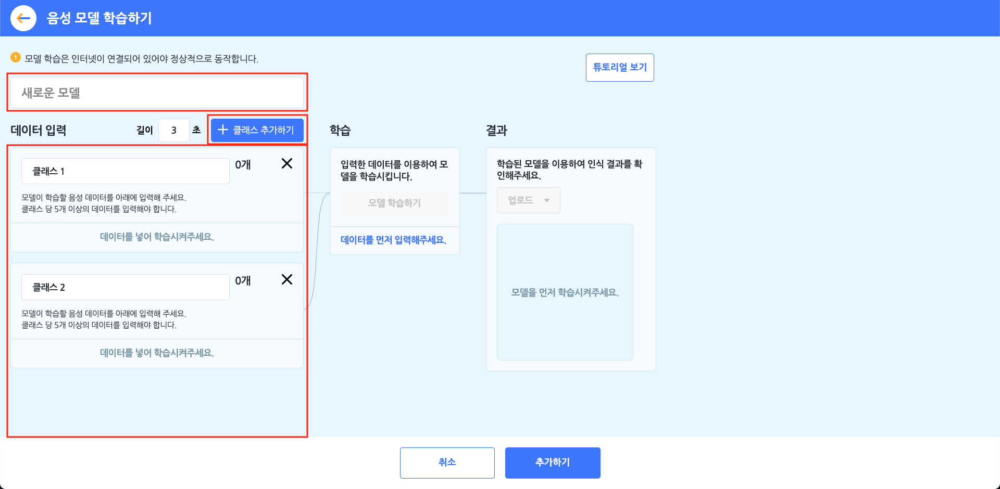
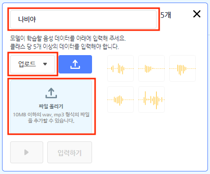
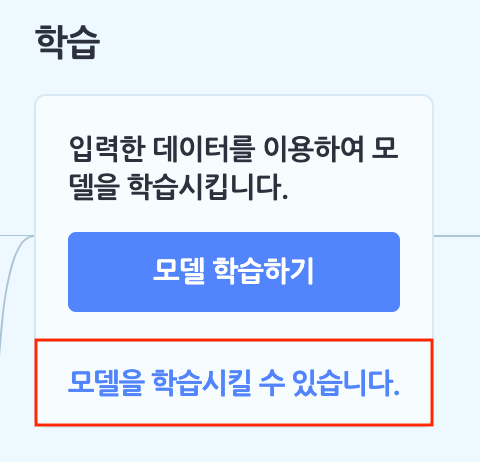
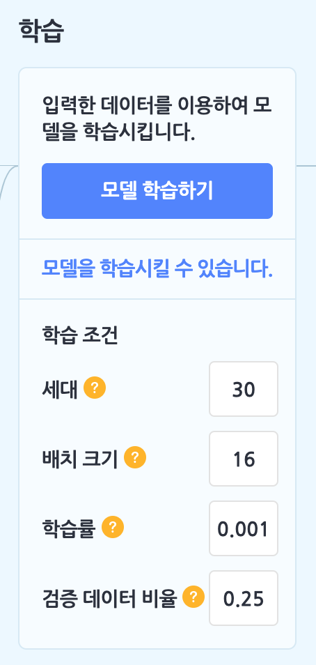
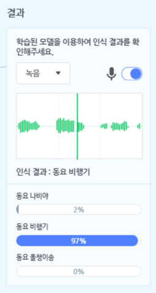
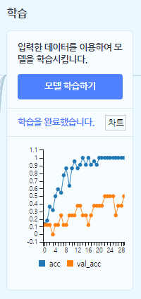
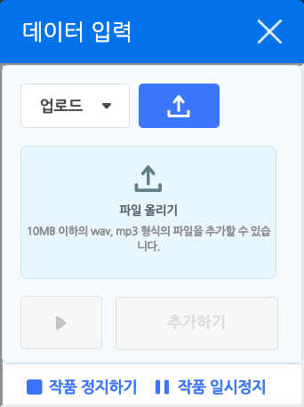

AI 모델 > 분류 - 소리 모델
학습 데이터로 입력한 소리를 클래스로 직접 분류하고 학습시키면 새롭게 입력되는 소리를 분류할 수 있는 모델을 만들 수 있습니다. 소리의 파형이 얼마나 유사한지를 기준으로 분류하는 모델이에요.
모델이 학습할 소리는 직접 녹음하거나 wav, mp3 파일로 업로드할 수 있어요. 직접 녹음할 때는 1~3초까지 녹음 길이를 설정할 수 있고, 녹음된 소리의 앞부분과 뒷부분을 잘라낼 수 있는 트리밍 기능을 사용할 수 있답니다.
- 소리 모델은 사용자의 PC 환경에 따라 로딩 시간이 오래 걸릴 수 있습니다.
- 소리 모델의 ‘녹음’ 모드는 마이크 사용이 가능한 브라우저에서만 사용할 수 있습니다. 인터넷 익스플로러에서는 마이크 사용이 불가능해 해당 모드를 사용할 수 없습니다.
소리 모델을 선택하면 아래와 같이 소리 모델 학습하기 창이 나타납니다.

먼저 모델의 이름부터 지어볼까요? 이름 상자를 클릭해서 모델의 이름을 정합니다.
① 클래스 만들기
모델 학습의 첫 단계는 데이터 입력 영역을 클래스로 채우는 것이에요. 클래스는 학습할 데이터의 묶음이고, 데이터를 분류하는 기준입니다.
[클래스 추가하기] 버튼을 클릭하면 클래스를 필요한 만큼 추가할 수 있어요.

각 클래스를 선택하면 자세한 정보와 함께 소리를 입력할 수 있어요. 이름 상자를 클릭하면 클래스의 이름을 정할 수 있습니다. 학습 모델이 알려주는 결과 값으로 클래스 이름을 사용하니까 클래스 이름을 알아보기 쉽게 정해주는 것이 중요해요.
왼쪽의 목록 상자를 클릭하면 소리를 어떻게 입력할 것인지 선택할 수 있어요.
- 업로드 : 소리 파일을 올립니다. 파일은 10MB 이하여야 하고, wav, mp3 형식(확장자)를 지원해요.
- 녹음 : 기기와 연결한 마이크로 소리를 녹음합니다. 가운데 상자에서 녹음하는 소리의 파장을 볼 수 있고, [입력하기] 버튼을 눌러 사진을 촬영할 수 있어요.
1~3초까지 녹음할 수 있고, 양쪽의 빨간 선을 드래그하면 소리의 앞/뒤를 잘라내는 트리밍 기능을 사용할 수 있어요.
각 클래스에 대해서 충분히 학습을 할 수 있도록 최소 5개 이상의 소리를 입력해야 합니다. 입력한 각 소리는 마우스 포인터를 대거나 터치하면 나타나는 [X] 버튼을 눌러서 삭제할 수 있어요.
② 학습 조건 설정하기
이렇게 2개 이상의 클래스를 만들고 나면, 학습 박스의 [모델 학습하기] 버튼을 클릭할 수 있습니다. 이 버튼을 바로 눌러 학습을 완료할 수도 있지만, ‘모델을 학습시킬 수 있습니다’ 글씨를 클릭해서 다양한 학습 조건을 설정할 수 있어요.
세대(Epoch)
입력한 데이터 전체를 몇 번 반복하여 학습할지 정하는 부분입니다. 입력한 모든 데이터 전체를 1번 학습하는 것을 1세대라고 부르고, 세대는 에포크라고도 불러요.다양한 문제(데이터)가 담긴 문제집 1권을 총 몇 번을 푸냐는 것과 같은 것이지요. 그러나 문제집을 1번만 봐서 문제를 잘 푸는 사람이 없듯이 1번만 학습하면 정확하지 않은 결과가 나올 수도 있어요. 반면 하나의 문제집만 너무 반복해서 학습하면 계속 같은 문제만 학습하다 보니 응용력이 부족해지겠죠?
적당히 학습해야 좋은 결과를 얻을 수 있습니다.
배치 크기(Batch Size)
입력한 데이터 전체를 얼마큼 작은 부분으로 쪼개서 학습할지 정하는 부분입니다.다양한 문제(데이터)가 담긴 문제집 1권에서 숙제를 어디서부터 어디까지 할지 범위를 정하는 것과 비슷해요. 숙제의 범위가 넓으면 문제집 한 권을 빠르게 끝낼 수 있고, 숙제의 범위가 좁으면 숙제를 여러 번 해야 문제집을 다 끝낼 수 있는 것과 같습니다.
학습률(Learning Rate)
데이터를 얼마나 세세하게 학습할지를 정하는 부분입니다.모델이 계속 학습하면서 가장 나은 결과를 갖는 점을 찾아간다고 상상하면, 그 때의 보폭의 크기를 정하는 것과 같아요. 보폭이 작으면 가장 나은 결과를 찾을 수는 있겠지만 시간이 오래 걸릴 것이고, 보폭이 크면 가장 나은 결과를 자꾸 지나치면서 제대로 된 결과를 찾아내지 못 할 수 있어요.
검증 데이터 비율(Validation Data Rate)
입력한 데이터 중 어느정도 비율을 학습한 모델을 검증하는 데에 사용할지 정하는 부분입니다.검증 데이터 비율을 0.3로 정했다면 10개의 데이터를 입력했을 때 7개는 학습용으로, 3개는 검증용으로 사용하겠다는 뜻이 돼요.
③ 학습 결과 확인하기
학습 조건을 모두 설정했다면 [모델 학습하기] 버튼을 클릭해서, 결과 박스에서 결과를 확인할 수 있습니다.

클래스에 소리를 입력하는 것처럼, 소리를 업로드해서 학습 모델이 소리를 제대로 학습했는지 확인할 수 있어요.
각 클래스에 얼마나 가까운지 막대 그래프로 비교해보세요!

이렇게 학습을 완료했다면, 학습 영역에서 [차트] 버튼을 클릭해 학습의 과정을 그래프로 확인할 수 있어요.
가로축은 세대(Epoch)를 나타냅니다. 세로축에서 acc는 학습 정확도를 의미하고, val_acc는 검증 정확도를 나타냅니다. 정확도가 1에 가까울수록 더 정확한 인식 결과를 얻을 수 있어요.
1. 학습한 모델로 분류하기
데이터 입력 팝업 창을 열고, 입력한 데이터를 학습한 모델로 분류합니다.
동시에 작품을 일시 정지해요. 오른쪽 아래 버튼을 클릭해서 창을 닫지 않고도 작품을 다시 시작할 수 있습니다.
오른쪽 위의 [X] 버튼을 클릭하면, 데이터를 입력하지 않고 창을 닫을 수도 있어요.
2. 분류 결과
입력한 데이터를 학습한 모델로 분류한 결과를 가져오는 값 블록입니다.
입력한 데이터와 가장 비슷한 클래스의 이름을 가져와요. 만일 데이터를 입력하지 않았다면 아무 것도 가져오지 않아요.
3. [클래스] 의 신뢰도
입력한 데이터가 분류된 클래스에 대한 신뢰도를 가져오는 값 블록입니다.
만일 데이터를 입력하지 않았다면 0 을 가져와요.
목록 상자( )를 클릭하면 정확도를 가져올 클래스를 선택할 수 있어요.
)를 클릭하면 정확도를 가져올 클래스를 선택할 수 있어요.
4. 분류 결과가 [클래스] 인가?
입력한 데이터가 선택한 클래스와 가장 비슷하다면 참, 아니라면 거짓으로 판단하는 블록입니다.
만일 데이터를 입력하지 않았다면 항상 거짓을 가져와요.
목록 상자( )를 클릭하면 결과를 확인할 클래스를 선택할 수 있어요.
)를 클릭하면 결과를 확인할 클래스를 선택할 수 있어요.